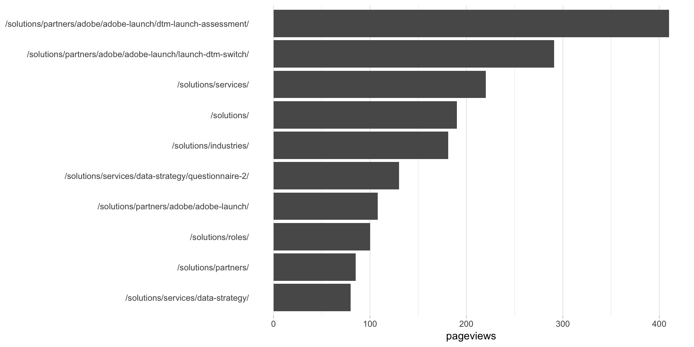

This example pulls the top 10 pages for the last thirty days, for pages that have “solutions” in the page name. With the v4 API, filters are more powerful than v3, but (alas!) very basic filters can feel pretty convoluted.
Be sure you’ve completed the steps on the Initial Setup page before running this code.
For the setup, we’re going to load a few libraries, load our specific Google Analytics credentials, and then authorize with Google.
# Load the necessary libraries. These libraries aren't all necessarily required for every
# example, but, for simplicity's sake, we're going ahead and including them in every example.
# The "typical" way to load these is simply with "library([package name])." But, the handy
# thing about using the approach below -- which uses the pacman package -- is that it will
# check that each package exists and actually install any that are missing before loading
# the package.
if (!require("pacman")) install.packages("pacman")
pacman::p_load(googleAnalyticsR, # How we actually get the Google Analytics data
tidyverse, # Includes dplyr, ggplot2, and others; very key!
devtools, # Generally handy
googleVis, # Useful for some of the visualizations
scales) # Useful for some number formatting in the visualizations
# Authorize GA. Depending on if you've done this already and a .ga-httr-oauth file has
# been saved or not, this may pop you over to a browser to authenticate.
ga_auth(token = ".ga-httr-oauth")
# Set the view ID and the date range. If you want to, you can swap out the Sys.getenv()
# call and just replace that with a hardcoded value for the view ID. And, the start
# and end date are currently set to choose the last 30 days, but those can be
# hardcoded as well.
view_id <- Sys.getenv("GA_VIEW_ID")
start_date <- Sys.Date() - 31 # 30 days back from yesterday
end_date <- Sys.Date() - 1 # YesterdayIf that all runs with just some messages but no errors, then you’re set for the next chunk of code: pulling the data.
There are two main parts to this:
Creating the dimension filter can feel convoluted. Or, at least, it can feel redundant. This is recognized – it’s the way the API is built and, for now, adding helper functions for “simple” filters would just add more confusion. Creating v4 dimension filters is a three-step process:
dim_filter() function. This is, essentially, “one condition” if you were building a filter in the web interface. You can have multiple filter objects, but, in this example, we’re only going to create one.filter_clause_ga4() function. This bundles together one or more filter objects. In this example, it’s going to be a 1-object bundle, which makes the code look a little funny.google_analytics_4() query.# Create a dimension filter object. See ?dim_filter() for details. We're using a
# regular expression here (REGEXP) but also could have used a "partial" match (PARTIAL).
# You should be using regEx in general. It's cleaner. And, the more comfortable you are
# with it, the easier it will be to use when you have more complex needs. </soapbox>
my_dim_filter_object <- dim_filter("pagePath",
operator = "REGEXP",
expressions = ".*solutions.*")
# Now, put that filter object into a filter clause. If you had multiple filters, there
# are two aspects of this that wouldn't seem so weird. With one... they do seem weird:
# 1. The "filters" argument takes a list. So, you have to put your filter object in a
# list. It's a one-element list.
# 2. The "operator" argument is moot -- it can be AND or OR...but you have to have
# it be something, even though it doesn't do anything.
my_dim_filter_clause <- filter_clause_ga4(list(my_dim_filter_object),
operator = "AND")
# Pull the data. See ?google_analytics_4() for additional parameters. Depending on what
# you're expecting back, you probably would want to use an "order" argument to get the
# results in descending order. But, we're keeping this example simple.
ga_data <- google_analytics(viewId = view_id,
date_range = c(start_date, end_date),
metrics = "pageviews",
dimensions = "pagePath",
dim_filters = my_dim_filter_clause)
# Go ahead and do a quick inspection of the data that was returned. This isn't required,
# but it's a good check along the way.
head(ga_data)| pagePath | pageviews |
|---|---|
| /solutions/ | 333 |
| /solutions/industries/ | 290 |
| /solutions/partners/ | 231 |
| /solutions/partners/adobe/ | 144 |
| /solutions/partners/adobe/adobe-launch/ | 366 |
| /solutions/partners/adobe/adobe-launch/?p1=dfdd&p2=2345 | 1 |
Since we didn’t sort the data when we queried it, let’s go ahead and sort it here and grab just the top 10 pages.
# Using dplyr, sort descending and then grab the top 10 values. We also need to make the
# page column a factor so that the order will be what we want when we chart the data.
# This is a nuisance, but you get used to it. That's what the mutate function is doing
ga_data_top_10 <- ga_data %>%
arrange(-pageviews) %>%
top_n(10) %>%
mutate(pagePath = factor(pagePath,
levels = rev(pagePath)))
# Take a quick look at the result.
head(ga_data_top_10)| pagePath | pageviews |
|---|---|
| /solutions/partners/adobe/adobe-launch/dtm-launch-assessment/ | 777 |
| /solutions/partners/adobe/adobe-launch/launch-dtm-switch/ | 420 |
| /solutions/services/ | 399 |
| /solutions/partners/adobe/adobe-launch/ | 366 |
| /solutions/ | 333 |
| /solutions/industries/ | 290 |
This won’t be the prettiest bar chart, but let’s make a horizontal bar chart with the data. Remember, in ggplot2, a horizontal bar chart is just a normal bar chart with coord_flip().
# Create the plot. Note the stat="identity"" (because the data is already aggregated) and
# the coord_flip(). And, I just can't stand it... added on the additional theme stuff to
# clean up the plot a bit more.
gg <- ggplot(ga_data_top_10, mapping = aes(x = pagePath, y = pageviews)) +
geom_bar(stat = "identity") +
coord_flip() +
theme_light() +
theme(panel.grid.major.y = element_blank(),
panel.grid.minor.y = element_blank(),
panel.border = element_blank(),
axis.title.y = element_blank(),
axis.ticks.y = element_blank())
# Output the plot. You *could* just remove the "gg <-" in the code above, but it's
# generally a best practice to create a plot object and then output it, rather than
# outputting it on the fly.
gg
This site is a sub-site to dartistics.com